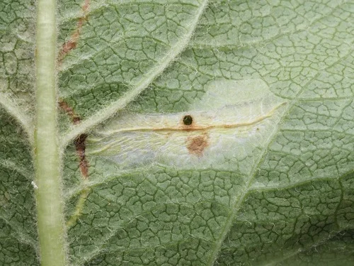

苹果叶背的帐篷状潜斑
照片中，苹果叶背靠近叶脉的浅色斑块是幼虫在叶内取食留下的痕迹。斑块处的表皮拱起，形似小帐篷。

现场检查
翻过叶片，沿叶脉寻找浅色、略微拱起的斑块。透过薄薄的表皮，有时能看到深色小点。
鉴别相似表现
举起叶片对光查看。潜斑表面仍覆有一层薄薄的叶组织，咬穿的孔洞则能直接透光。
处理选择
如果只有少数叶片出现潜斑，把叶片留在树上观察。生长季结束后清理落叶。
后续复查
复查附近叶片，留意叶背靠近叶脉处是否出现新的帐篷状浅色斑块。
寄主检查要点
这类潜斑出现在苹果叶片上。果皮上的斑痕需要另行检查。
标记一根短枝，拍下枝上有潜斑的叶片。下次用照片比对原有斑块，再检查先前完好的叶片是否出现新潜斑。
检查受害叶片下方的苹果，果实可能仍然完好。如果果皮有蛀孔，果肉内有褐色虫道，应另查果实害虫。